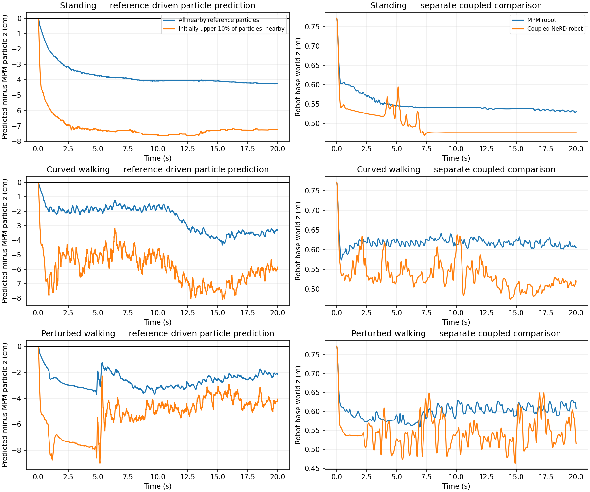
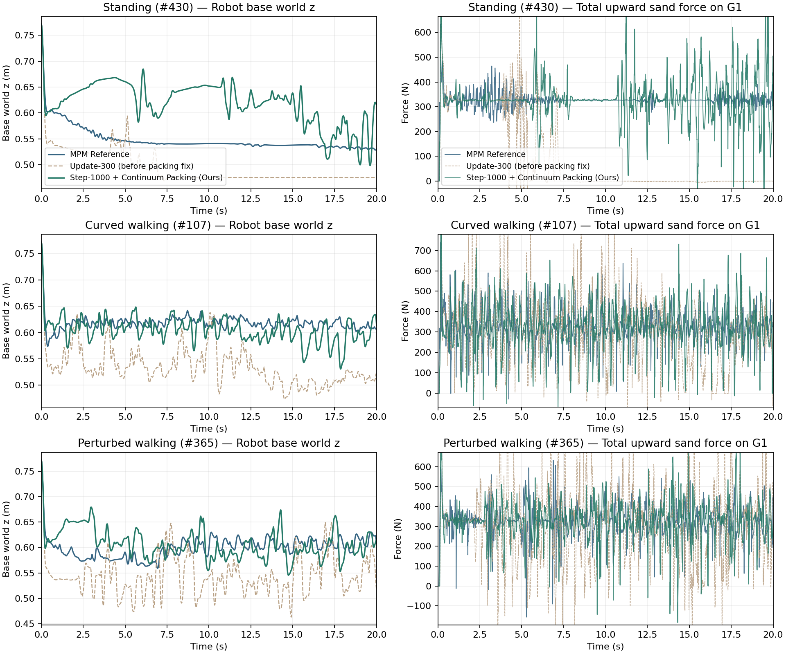
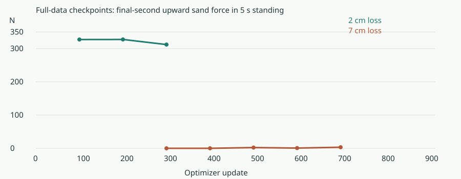
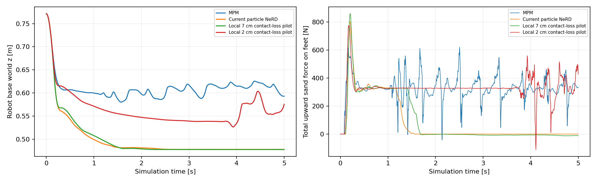

G1 sinkage: updated-environment evaluation
October 28, 2026 · Transolver with active particle selection + analytical force estimation
Isolating particle prediction from robot–force feedback
Controlled comparison
The same update-300 checkpoint, current enclosed tray, seeds, policy and 20-second commands are used. A separate particle predictor receives native MPM robot poses and velocities at every 200 Hz step, equivalent to replaying that robot motion. Its particle history is initialized once with the same constant-velocity initialization as the coupled runner; thereafter its own particle predictions are recurrent inputs. Native MPM state is never overwritten. No new training dataset is collected.
A second diagnostic prediction is sampled every eight physics steps using MPM particle history. Its one-step error distinguishes short-step prediction from error accumulated when the network consumes its own particle predictions. These are different horizons and should not be interpreted as identical metrics.
| Scenario | Nearby particle z error, final second (cm) | Initially upper particles nearby: z error (cm) | 20 s position RMSE (mm) | Mean one-step RMSE (mm) |
|---|---|---|---|---|
| Standing · validation #430 | -4.24 | -7.25 | 29.12 | 0.016 |
| Curved walking · validation #107 | -3.34 | -5.92 | 37.80 | 0.040 |
| Perturbed walking · validation #365 | -2.14 | -4.36 | 40.71 | 0.030 |
Signed error = predicted particle world z minus the same particle's MPM world z. Negative means too low. Nearby means the reference particle is within a 15 cm horizontal radius of either current MPM foot-body origin. “Initially upper” means the upper 10% of particles by z after initialization settling, tracked by particle identity; it is not a fitted sand surface or a foot-penetration measurement. Both signed-error columns average seconds 19–20. RMSE includes all particles and can be diluted by stationary particles. The one-step and 20-second errors use different horizons; their ratio is not an accuracy-improvement factor.

What this establishes
Particle-motion prediction is a confirmed failure source. Fixing force-estimator parameters alone cannot correct the isolated predictor's particle positions. The coupled simulation can additionally amplify this error as the robot moves into the incorrectly predicted sand. The MPM reference was rerun for this diagnostic: its robot base path differs from the earlier reference by up to 1.7 cm, 16.7 cm and 22.8 cm in the three scenarios. Each particle-error measurement uses its own simultaneous MPM reference, so that drift does not contaminate the within-run comparison. The right-hand plots show separate earlier coupled runs rather than identical robot trajectories. The present experiment does not quantify that extra contribution and does not isolate active selection, boundary features, or the training loss as the unique cause.
Next acceptance test: a candidate must preserve near-foot particle geometry for the complete 20-second MPM-driven robot trajectory before being accepted based on a coupled standing or walking test. Global particle RMSE alone can hide local contact errors.
Measured results and reference-trajectory comparison
Evaluation in the current environment: no approach platform (Fixed with Step-1000 + Continuum Packing)
d_min = 16.5 mm) and upward-clamped confining cup normals (n_cup,z ≥ +0.25) on the full-dataset Step-1000 checkpoint keeps median spacing at 15.4 mm (0 pairs < 5 mm), restores 20-second standing support from 0.25 N → 329.2 N (MPM: 329.3 N), and eliminates the 8.8–9.2 cm base height sinkage across all three 20-second scenarios.These runs use the current g1.collect.configure(), matching the environment in video/g1_sim.mp4. Both the rigid approach platform and its visual mesh are removed. The 3 × 3 × 0.3 m sand bed retains its rigid floor and four retaining walls; the walls extend to world z = +0.1 m, above the initial sand surface at z = 0.
| Scenario (20.0 s autonomous coupled simulation) | Duration MPM / u300 / Ours (s) | Final-second upward sand force MPM / u300 / Ours (N) | Final base world z MPM / u300 / Ours (m) | 20 s Isolation near-foot z error u300 / Ours (cm) |
|---|---|---|---|---|
| Standing · validation #430 | 20.0 / 20.0 / 20.0 | 329.3 / 0.2 / 329.2 | 0.530 / 0.475 / 0.617 | −4.24 / −0.81 |
| Curved walking · validation #107 | 20.0 / 20.0 / 20.0 | 325.8 / 299.6 / 312.2 | 0.606 / 0.518 / 0.614 | −3.34 / −0.37 |
| Perturbed walking · validation #365 | 20.0 / 20.0 / 20.0 | 322.5 / 320.6 / 321.6 | 0.608 / 0.516 / 0.615 | −2.14 / +0.20 |

Standing
Curved walking
Perturbed walking
Measurements · Evaluation conditions · Environment configuration snapshot
Current full-dataset training results
Snapshot: October 28, 2026, 5:51 p.m. Pacific. Both jobs are RUNNING on isaac-lab-l40s-03: 2 cm loss at update 400/1,000; 7 cm comparison at 800/1,000. Downloaded and dynamically evaluated checkpoints currently extend to 300 and 700, respectively.

Standing validation #430, identical initial conditions and analytical force-estimator settings. Forces are the total upward sand force on G1. Base height is world-frame z, not penetration depth. Each checkpoint runs for five seconds; the final-second mean uses seconds 4–5.
| Training contact band | Update | Mean support (N) | Final-second support (N) | Final base world z (m) |
|---|---|---|---|---|
| 2 cm | 100 | 327.1 | 327.3 | 0.555 |
| 2 cm | 200 | 327.1 | 327.4 | 0.544 |
| 2 cm | 300 | 324.5 | 312.1 | 0.537 |
| 7 cm | 300 | 114.7 | 0.0 | 0.475 |
| 7 cm | 400 | 137.6 | 0.0 | 0.475 |
| 7 cm | 500 | 121.1 | 2.3 | 0.475 |
| 7 cm | 600 | 120.1 | 0.7 | 0.475 |
| 7 cm | 700 | 145.4 | 3.2 | 0.475 |
Particle prediction validation
At update 300, the 2 cm model has near-contact position RMSE 16.53 mm, compared with 21.62 mm before fine-tuning. Global position RMSE is 4.22 mm, compared with 3.53 mm initially: contact accuracy improves while overall accuracy worsens. These measurements use one 100-step (0.5 s) recurrent window for each of the 50 validation trajectories.
The 7 cm model reports 15.45 mm within its wider region at update 800, but this is a different particle subset and cannot be directly compared with the 2 cm metric. Its poor dynamic support shows why loss alone is insufficient.
Still required: finish training, evaluate longer dynamic standing and walking with the full-data checkpoints, and repeat the recorded-motion force comparison. The videos and 50-trajectory force results below belong to the earlier one-trajectory pilot, not these full-data checkpoints.
Checkpoint measurements and validation records · 2 cm training · 7 cm comparison
Problem
The settled-window checkpoint still allowed G1 to sink until sand support nearly vanished. In a matched five-second straight run, final-second upward sand force was 0.19 N, versus 324.96 N for MPM.
Possible reasons
Increasing K, widening the selected region, removing synthetic boundary features, and removing the displacement taper did not restore support with the existing checkpoint. These inference ablations do not prove that the boundary design is adequate, but they do not support a simple “too few selected particles” fix.
The strongest diagnostic was particle-position substitution: replacing learned positions with MPM positions restored mean upward support from 112.9 N to 324.5 N. Replacing velocities alone gave 126.5 N. The unchanged estimator using both reference positions and velocities gave 318.1 N. Mixed substitutions are deliberately inconsistent diagnostic states, not simulation methods.
Earlier diagnostic and pilot results
The current-environment full-dataset evaluation above is the primary dynamic comparison. The following measurements and pilot videos are retained as investigation history.
Change the training loss, keep inference unchanged
The existing loss balances errors over moving and stationary particles. Add a separately normalized loss for reference particles within 2 cm of a foot collision box, using the existing foot contact margin. The network is still supervised only on particle positions.
L_balanced is the existing average of moving- and stationary-particle mean squared position errors. L_near_contact is mean squared position error over the selected near-contact particle/time pairs. Both use the existing division by dt². Membership uses reference next-step particle positions and the recorded current foot pose; reference positions are used only during training.
All 100 prediction steps are recurrent, with full backpropagation over 0.5 seconds at 200 Hz. Predicted particle positions feed the next model step; the recorded robot state supplies foot geometry during training. Architecture, K=5,312, M=512, boundary features and inference remain unchanged.
Recorded robot motion: force reconstruction
| Particle predictor | Mean upward sand force on both feet | Per-foot force-vector RMSE |
|---|---|---|
| Current settled-window checkpoint | 112.9 N | 150.4 N |
| 7 cm contact-loss local pilot | 159.6 N | 124.1 N |
| 2 cm contact-loss local pilot | 325.6 N | 36.5 N |
| Reference particle positions and velocities | 318.1 N | 33.7 N |
Reference MPM mean: 328.8 N. Same recorded G1 motion, estimator and five-second interval. The local pilots use training trajectory 1; this repeated test-trajectory-2 comparison is exploratory, not an untouched final benchmark.
Free G1 dynamics: five-second comparison

MPM: final robot base world z=0.593 m, mean upward sand force=326.7 N. Current particle NeRD: 0.478 m and 84.3 N. The 2 cm pilot: 0.576 m and 329.0 N. Base height is not foot penetration depth. Sand forces exclude direct foot contact with rigid ground. Repeated GPU rollouts can diverge, so individual end heights are trajectory measurements, not deterministic constants.
Longer free dynamics
| Motion | Observed duration | Final base world z | Final-second upward sand force | Termination |
|---|---|---|---|---|
| Straight | 19.44 s | 0.601 m | 339.4 N | Workspace exit |
| Curved | 8.18 s | 0.612 m | 330.1 N | Workspace exit |
| Lateral | 5.78 s | 0.562 m | 316.6 N | Workspace exit |
All runs requested 20 seconds and retained the existing workspace termination. They exited the workspace without a fall termination; they are not three complete 20-second runs. MPM reference runs also exited the workspace (11.28 s straight, 10.32 s curved, 7.40 s lateral). Each final height above is measured at that run’s own end time.
Straight walking
Curved walking
Lateral walking
Native G1 MPM Newton RTX appearance, camera and resolution. GRF y-axis limits come from the MPM reference and are shared with particle NeRD. Each panel replays its own free dynamic trajectory; robot motion is not prescribed. A panel stops when that run terminates.
Complete-duration validation scenarios
| Scenario | Duration | Final-second support: MPM / pilot | Final base world z: MPM / pilot |
|---|---|---|---|
| Standing · validation #430 | 20 s | 327.8 / 330.1 N | 0.530 / 0.550 m |
| Curved walking · validation #107 | 10 s | 321.5 / 338.5 N | 0.620 / 0.609 m |
| Perturbed walking · validation #365 | 10 s | 328.9 / 331.3 N | 0.591 / 0.558 m |
All six runs completed their requested durations without early termination. The old checkpoint also completed 20 seconds of standing, but its final-second sand force was 0 N and its base world z was 0.475 m. Completing a run is therefore not enough to demonstrate correct sand support.

All 50 validation trajectories: force and geometry
One fixed 100-step (0.5 s) recurrent window per validation trajectory, sampling seed 42027. Recorded G1 motion is used for this force-reconstruction comparison; it is distinct from free dynamic simulation above.
| Particle input | Per-foot force-vector RMSE | Mean total upward sand force |
|---|---|---|
| Reference particles + analytical estimator | 40.9 N | 320.0 N |
| Initial checkpoint + analytical estimator | 81.5 N | 255.1 N |
| 2 cm pilot + analytical estimator | 46.3 N | 329.5 N |
Reference MPM mean upward force: 330.2 N. The pilot reduces force RMSE by 43% relative to the initial checkpoint, while using the same analytical estimator.
Why this can improve support without improving 3D position RMSE: among 42,469 reference near-sole particle/time samples, the fraction predicted more than 2 cm below the sole fell from 46.4% to 8.9%. Error along the foot normal fell from 11.5 mm to 9.5 mm. These are particles below the reference sole and within its horizontal footprint, not a percentage of all sand particles.
Remaining errors: combined 3D near-contact RMSE across the validation windows was 21.62 mm initially and 21.73 mm for the pilot; global RMSE increased from 3.53 mm to 3.91 mm. Horizontal errors increased. The fraction of those reference near-sole samples predicted above the foot center increased from 1.5% to 2.9%. This improves support, but does not establish accurate contact geometry everywhere.
Force measurements by validation trajectory · Geometry measurements · Dynamic validation conditions
Rejected corrections
Density projection initially restored support but failed in longer straight/curved dynamics. Adding ground and foot nonpenetration did not resolve the problem. Those changes were not installed in the production runner. Good short-run mean force alone was insufficient for acceptance.
Test plan
- 2 cm contact-loss training: the promising local-pilot formulation, now being tested on the full dataset.
- 7 cm contact-loss training: broader feature-support region, retained as a comparison.
Acceptance requires improved contact-region validation error, accurate forces with recorded robot motion, and sustained sand support in free G1 dynamics. A one-trajectory pilot does not establish generalization to other materials, terrain shapes, or robot tasks.